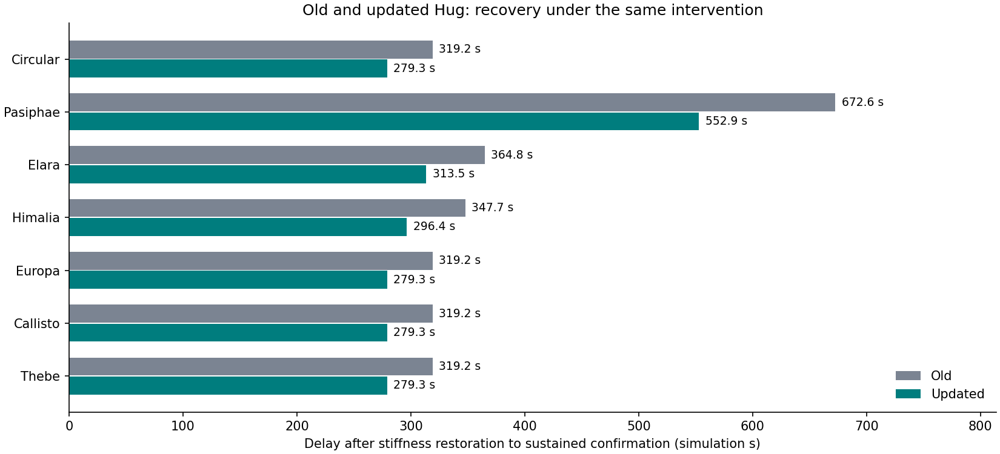
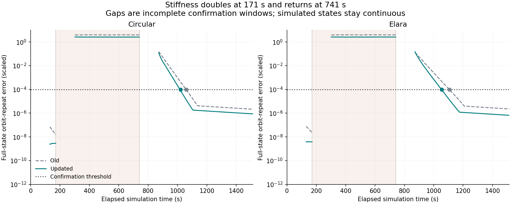
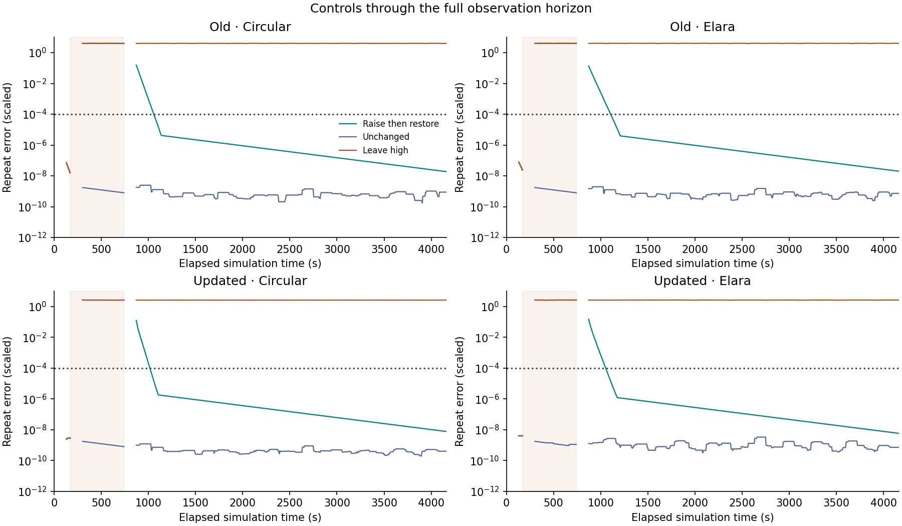

Earlier steady-rhythm comparison
The updated Hug recovers sooner in every tested orbit.
Both models undergo the same intervention: stiffness doubles at 171 seconds and returns at 741 seconds. The old and updated equations are integrated continuously, with their full internal states and orbital clocks retained.
Play the loss and recovery comparison Equations and methods All numerical results
These are synthetic recovery confirmation delays, measured after stiffness is restored. They include the diagnostic waiting window and have 5.7-second resolution. The updated test uses all eight states. No physical clay measurements or tearing model are added.

| Input | Old delay (s) | Updated delay (s) | Updated − old (s) | Updated, mechanical states only (s) |
|---|---|---|---|---|
| Circular | 319.2 | 279.3 | -39.9 | 279.3 |
| Pasiphae | 672.6 | 552.9 | -119.7 | 552.9 |
| Elara | 364.8 | 313.5 | -51.3 | 313.5 |
| Himalia | 347.7 | 296.4 | -51.3 | 296.4 |
| Europa | 319.2 | 279.3 | -39.9 | 279.3 |
| Callisto | 319.2 | 279.3 | -39.9 | 279.3 |
| Thebe | 319.2 | 279.3 | -39.9 | 279.3 |
Circular recovery changes from 319.2 to 279.3 seconds. Elara changes from 364.8 to 313.5 seconds. The old model's seven historical delays are reproduced on the same time grid. The projected column checks whether including hidden guard and participant states changes the confirmation delay.
The same loss-and-recovery test

The shaded region is the high-stiffness interval. Blank spans restart the diagnostic window, not the physical states. Dots mark sustained recovery confirmation. A pass is checked retrospectively through the full 4161-second horizon; an isolated overlap or one passing sample is insufficient.
Controls and full observation horizon

For both models and all seven inputs, the unchanged arm remains synchronized at every completed assessment. The leave-high arm loses short orbital repetition and does not recover it before 4161 seconds. All restored cases recover. These controls distinguish restoring stiffness from simply waiting. Both settled histories and all three arms are selectable in the player.
Numerical checks
84 live trajectories at two accuracy settings, with independently repeated updated-model preparation and 42 physical-unit Radau segment checks. All numerical gates: passed. Maximum saved full-state discrepancy: 5.13e-07; energy residual: 5.63e-07; independent-solver discrepancy: 1.74e-08. Exact spring-switch work is included.
This comparison now measures recovery under the earlier intervention. It still tests one guard strength and time mapping, two settled histories and a finite horizon. Added resistance and adaptation both differ from the old model; this test does not isolate which causes a recovery-time change. The animation's affine shear preserves joins by construction.
Frozen protocol · Source freeze · Equation tests · Saved animation samples